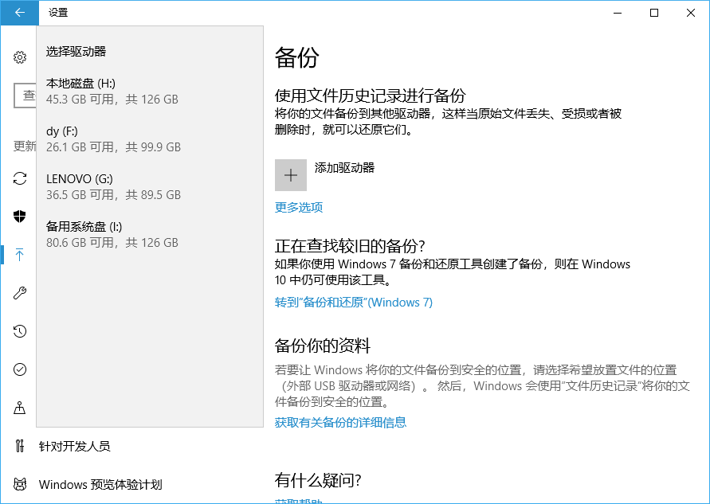
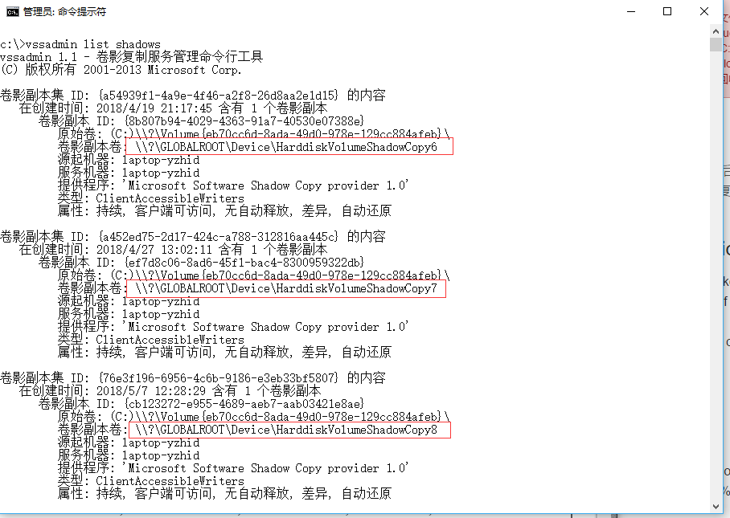
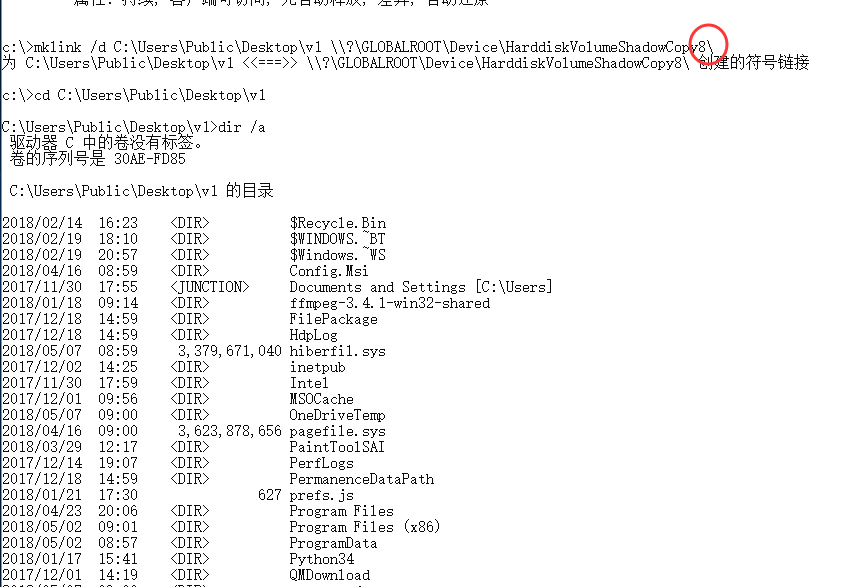

windows-回收站文件恢复
windows 回收站的文件被 “彻底删除” 后，如果在回收站清空前，系统有对之前的数据建立 shadow copy，可恢复至之前版本。。。
volume shadow copy service
The process of creating backup copy is konwn as taking a “volume snapshot” and the actual backup copy of data is known as a “shadow volume”.
就是磁盘某时刻的数据备份，，，win10 提供的备份功能（和本文讲的不同。。。），如下图

vssadmin
“vssadmin list shadows” 显示已有 “shadow copy”。

标注的为卷应副本名。
symbolic link
shadow volume 不是windows file-tree structure 的一部分不能被用户直接访问，，可通过建立 symbolic link（NTFS才可），，，

注意图中末尾的 “\” ,否则是看不到文件的。。。
可以看到 c 盘的之前版本文件，，